Information Architecture
Component Design
User Research
The participant card is a key part of ExtraHop detections. It acts as a “drivers license” for computers, holding critical identifying information that allows security analysts to understand the role the computer plays in an IT network.
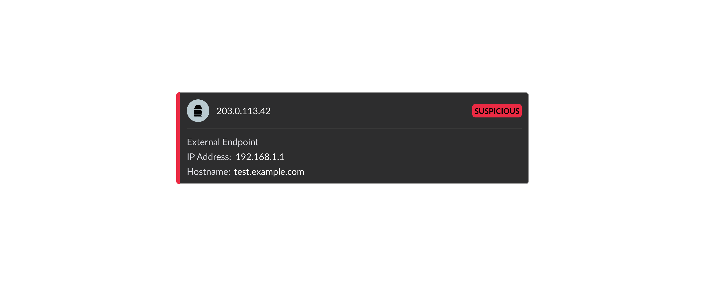
For a cybersecurity tool, data accuracy is critical. If analysts can't trust the information in a detection, they can't do their jobs effectively.
Our product team kept hearing that customers were unhappy with the accuracy of detections. Customers reported that information seemed incorrect and confusingly changed over time. Over 10 support cases were filed with customers reporting confusion around IP addresses and device hostnames, representing 9% of our total quarterly support volume. Additionally, a single bug ticket had accumulated more than 15 customer names.
Not only did this put a burden on the support team, but it was a clear indicator that our design was broadly failing our users. I set out to understand the root cause of this confusion and design a solution that made device data accurate and easy to understand.
were due to customer confusion
An example of the previous iteration of the participant card design.
Single instance of the existing design
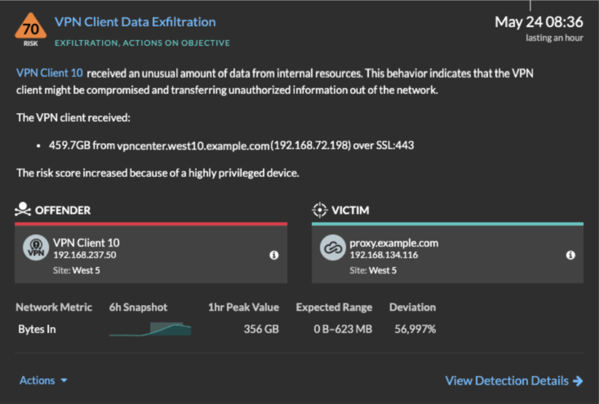
Existing card design placed inside a detection card
To get a better understanding of what was driving the high number of support cases, I conducted user research sessions with both our support team members and end users.
I started by meeting with our support team, since they were closest to the problem. They stated that the issue with IP addresses (ex: 192.168.1.24) had to do with how they were identified in ExtraHop. There were actually two identification methods: IP observations and time-of-detection IPs. Because these two methods could sometimes return different values, and because the participant card didn't indicate which method was being used, customers were left confused about why the information seemed to change.
With a clearer picture of the IP address issue, I moved on to conducting usability sessions with customers. I had them walk me through how they would investigate a detection and interact with the participant card. This is where I uncovered a second, related problem. Users frequently mistrusted the device hostname when it was populated with a hostname they knew was outdated or no longer associated with the device. In other cases, there was no hostname shown at all.
Talking through these reactions with customers, I landed on a key insight: users didn't realize that the participant card was displaying the device name, which in certain circumstances would be a hostname the device had used in the past. The data wasn't wrong, it just wasn't being explained.
A device hostname is a human-readable name given to computers to make them easier to remember. A hostname like pineapple.example.com is much easier to remember than DN5CHAX13J.
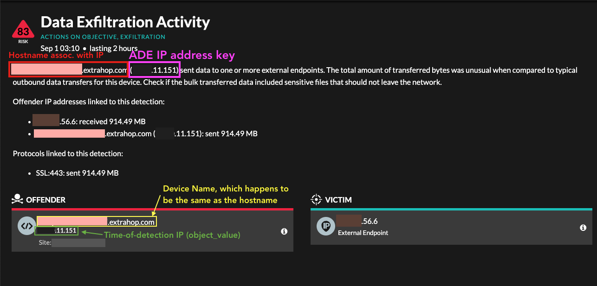
Annotated screenshot (with redacted information) that I shared internally after customer interviews.
From the research sessions, I understood that users would benefit from a more verbose card design that showed the information that they consistently relied upon, such as the device hostname, and the source of this data.
This project also gave me an opportunity to update the component’s styling to be more in line with the current styling language used across our product. The existing component’s design had remained mostly the same for years and was showing its age.
In my early prototypes, I played around with the styling of the card. I emphasized the information that users had told me was most important. I experimented with a data breakdown that separated hard evidence from device details.
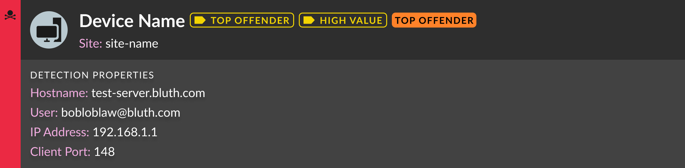
Later prototypes focused on refining the visual style of the card component.
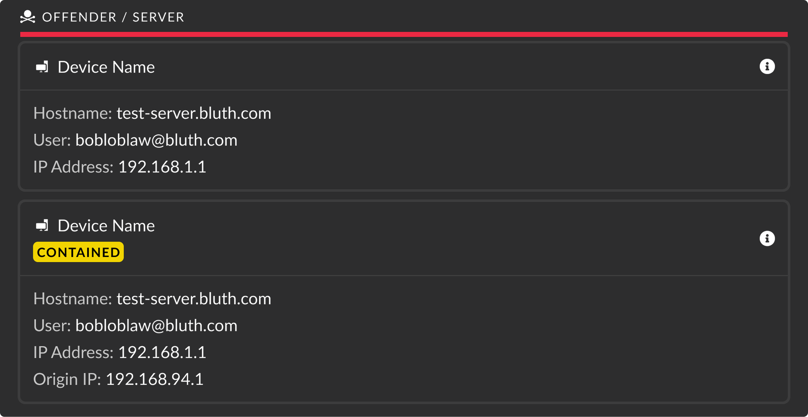
Before finalizing the design for development, I met with my design teammates to gather feedback.
First, we discussed the use of vertical text that said “Offender”. The original intention behind this positioning was to reduce the height of the card. My team’s feedback was that the text direction made it hard to read the text at a glance, almost forcing the user to tilt their head to the side. This design choice was increasing information density while compromising component readability (and our users' necks!).
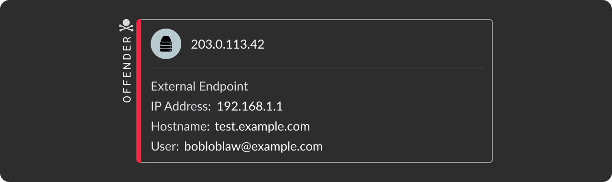
Second, we discussed the device icon. In an effort to reduce visual noise, my initial designs removed the teal icon background and instead inverted the icon fill to white. The downside to this change was an increase in project scope. As the icon is typically used with the teal background, this change would be diverging from our design standards and would have implications in other parts of the product.
The new component was designed atomically, utilizing components from our component library. In the new card, I accounted for an expanded set of uses and how the team might use this component in the future.
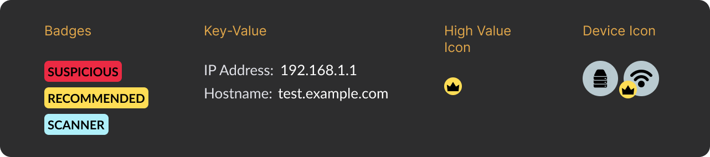
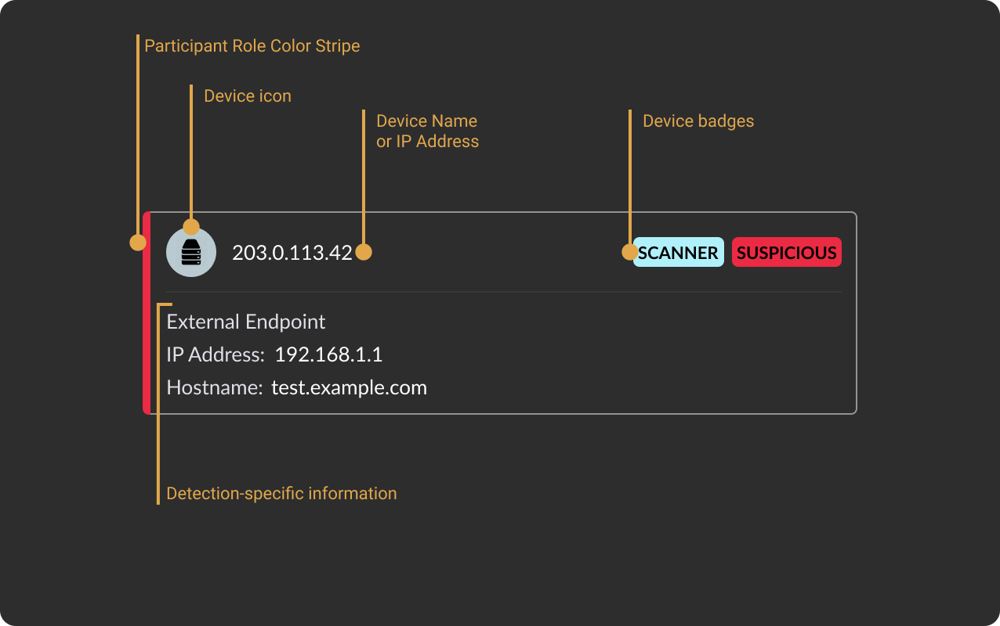
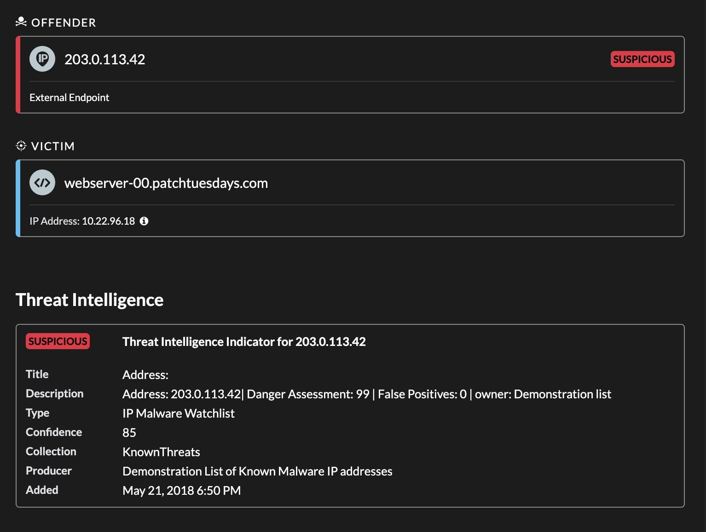
Card design alongside a similarly styled panel component
The card is split horizontally by a diving line which serves two purposes: visual grouping and logical grouping. Content above the line is all about the device object which exists in ExtraHop outside of the detection. Below the line is information that pertains to the detection that the user is currently viewing.
In the upper card section, I selected larger font sizes and brightly colored icons to increase the visual weight. The information here is key for the user to quickly scan and access.
For the information below the divide, I applied a smaller font size to allow for greater information density. To keep good “scanability” of the information, the values use the more prominent primary font color, while their labels are more subdued.
To overcome the confusion around device names and device hostnames, I added a permanent “Hostname” field to the card. Now, users have a consistent place to find the fields.
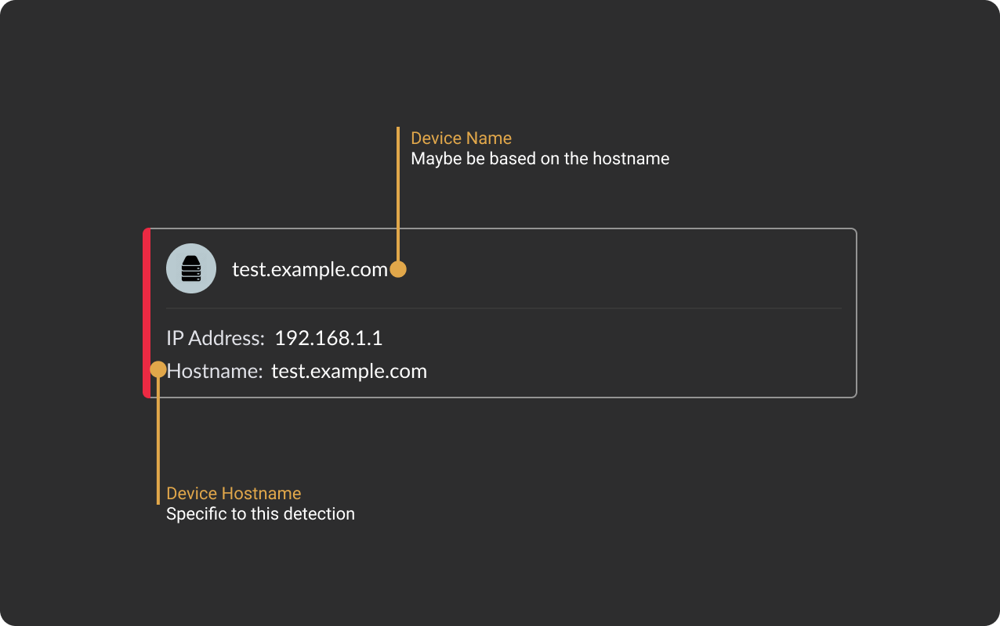
To remediate the IP address issues, I designed the card to show an information icon when the IP address source was an observed IP (the system's best guess based on data over the last 24 hours). When the user hovers over this icon, they see explanation text about the source of the IP address and why there might be discrepancies. This solution gives users a visual identifier as to which IP method was used. Additionally, it provides users a way to clarify their questions about the IP address source without having to start a lengthy support process.
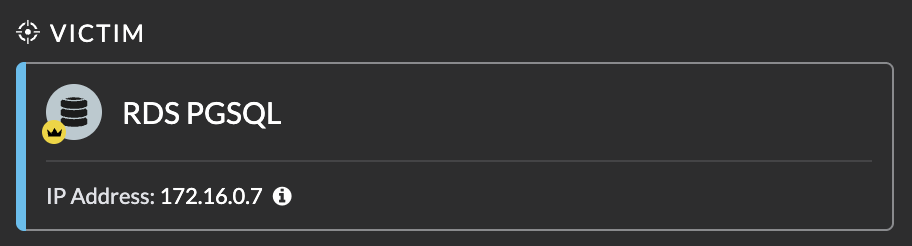
As part of this redesign process, I heavily scrutinized the data that we should have in the card. There were a number of rarely used and optional fields. I elected to only show these fields when they were populated with data, adding simplicity for the more common use cases. Similarly, there were fields, like the site, that were a property of both the detection and its participants. In the previous design, the same site value was shown on each participant card, so in the redesign I displayed it just once, near the detection title.
The participant card is used more widely in the Participant List, which I also updated in this redesign project. I updated the list title (ex: Victims) to use a font with a lighter weight, allowing for more emphasis on the cards themselves.
I also fixed a long-standing confusion with the ExtraHop terms of “Offender” or “Victim”. For technical users used to computer network terminology, they are more comfortable with “Sender” or “Receiver”. The list title now accommodated the ability to list both terms simultaneously.
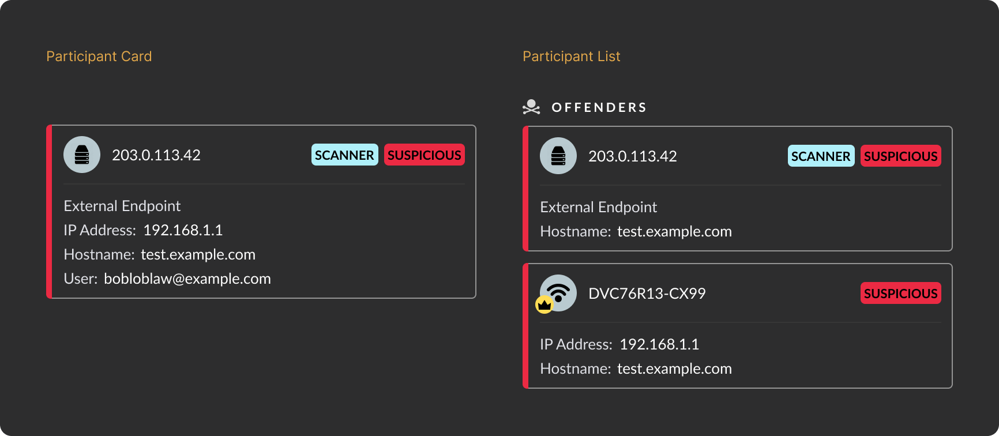
The updated card design launched with firmware version 9.9 in late 2024 and has since been iteratively improved with follow-on features.
The impact on our support team was immediate. Cases related to IP address and hostname confusion dropped significantly, and the conversations that do come up are easier to resolve. To help customers understand the changes, I joined the support team in presenting a customer webinar that drew over 200 attendees, representing roughly 4% of our customer base.
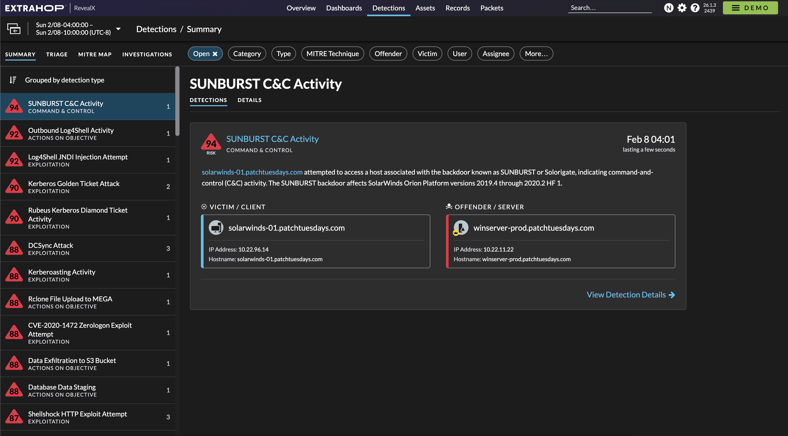
The components versatile design meant that I was able to use it in a later project for Smart Investigations.
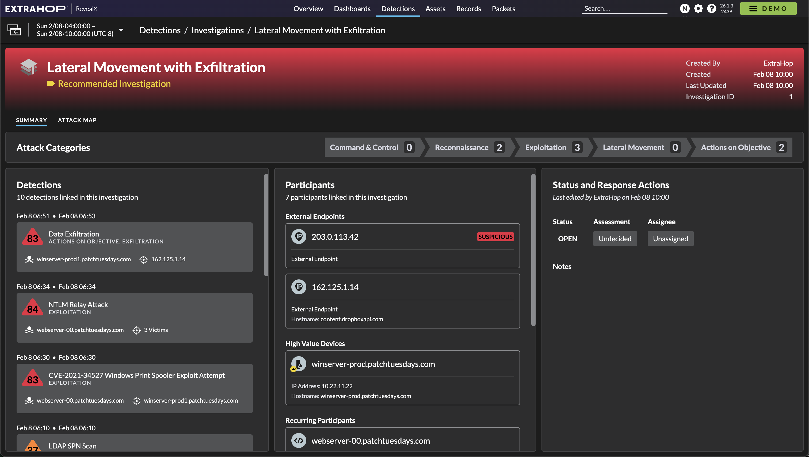
Given more time to work on this project, I would have iterated on the shorter version of the participant card. This variant would have worked better in the Participant List and could have allowed us to show more participants before resorting to a “Show More” button.
Secondly, I would revisit removing the device icon background. Ultimately, I believe that the background color just adds too much visual noise to the component. It is one more color in a somewhat colorful component and can end up being distracting.
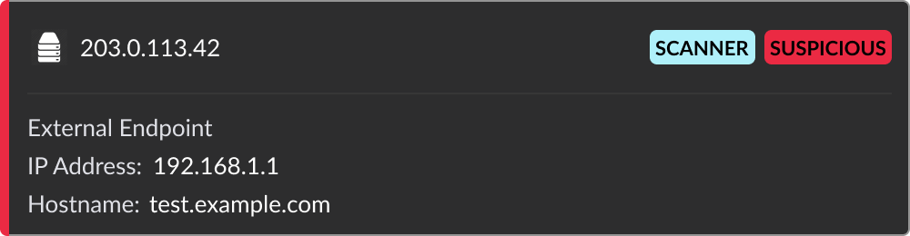